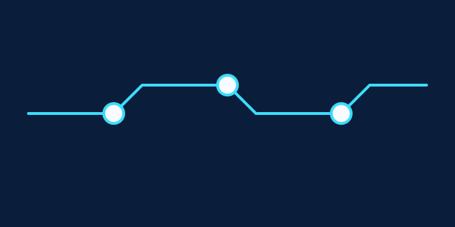
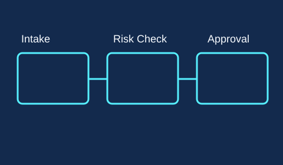

Approval Journey
We keep contextual animation for wayfinding and clarity, while honoring user preferences like reduced motion.

Inclusion Guardrails
Accessibility-first interaction model
- Color choices exceed WCAG AA contrast requirements.
- Every control has an accessible label and visible focus state.
- Landmarks and heading order preserve screen-reader context.

Performance Guardrails
Budgets that keep the page fast
Non-critical media is lazy-loaded, SVGs are optimized, and CI checks bundle size plus Lighthouse budgets.
The blueprint background uses deep navy while text and controls use near-white and bright cyan accents, keeping contrast ratios in WCAG AA range for regular and large text.